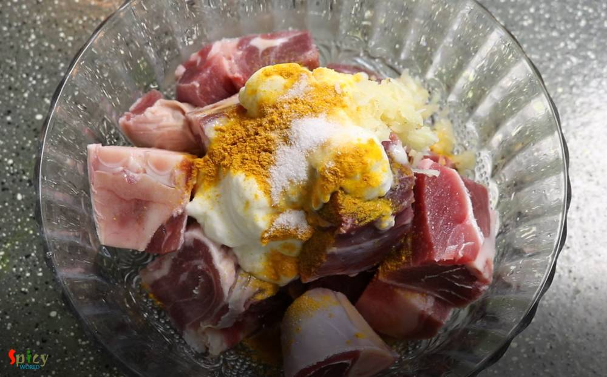
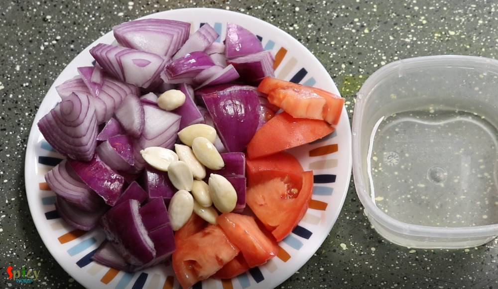
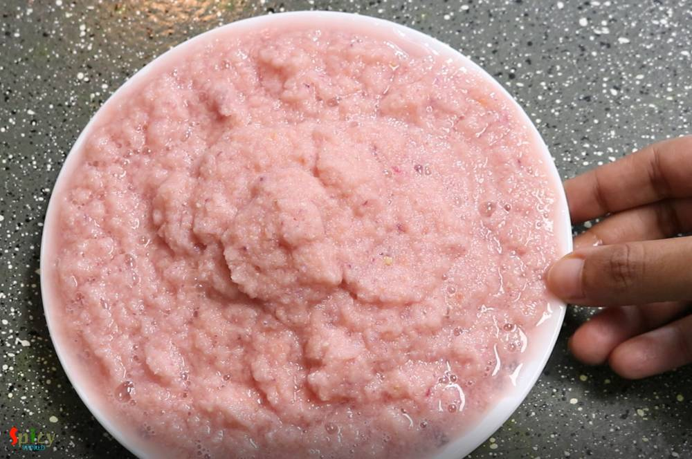
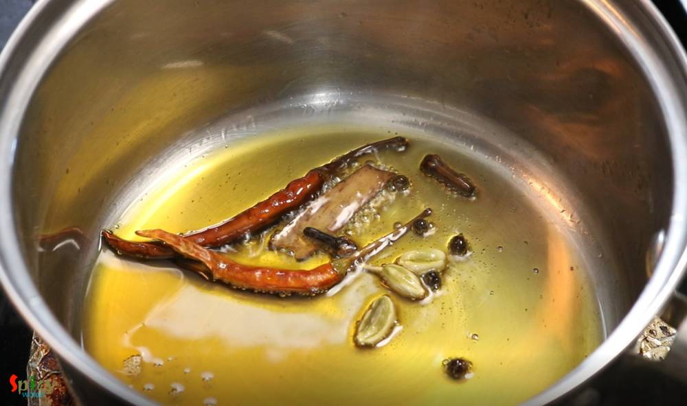
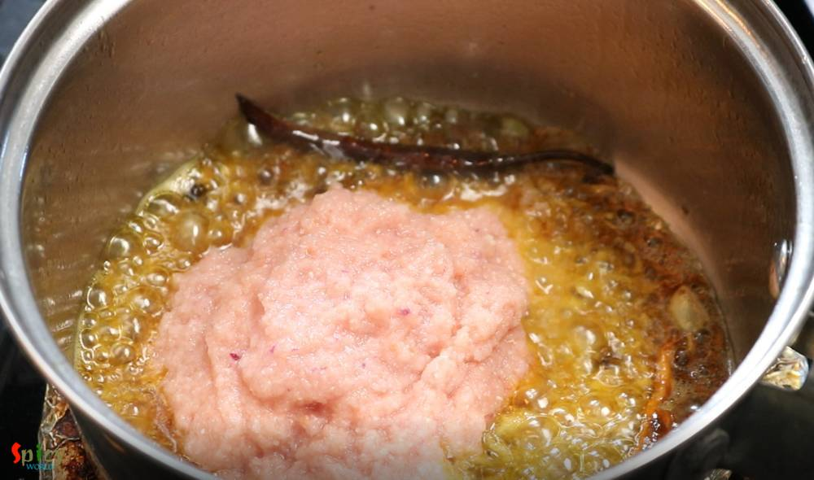
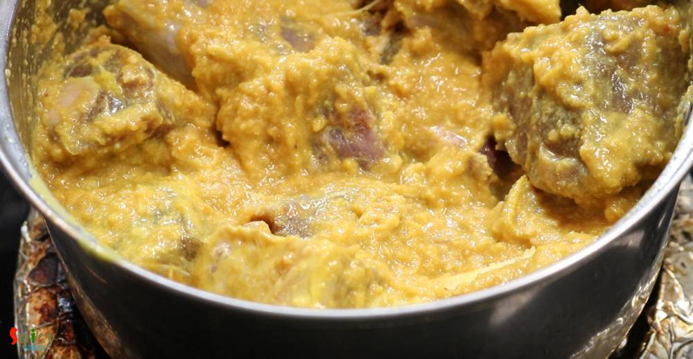
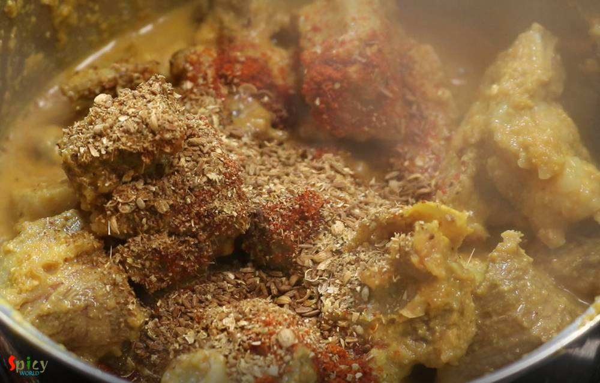
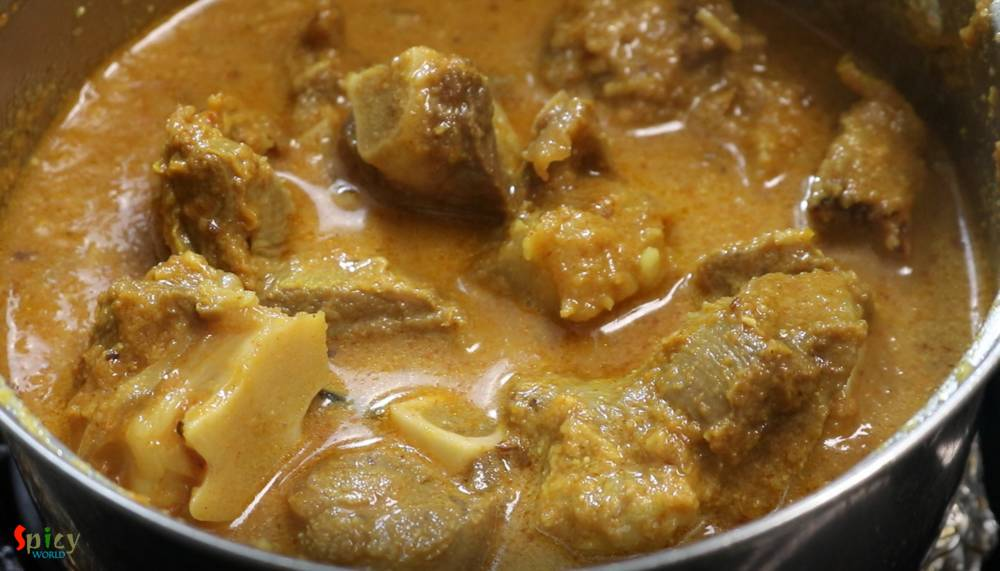
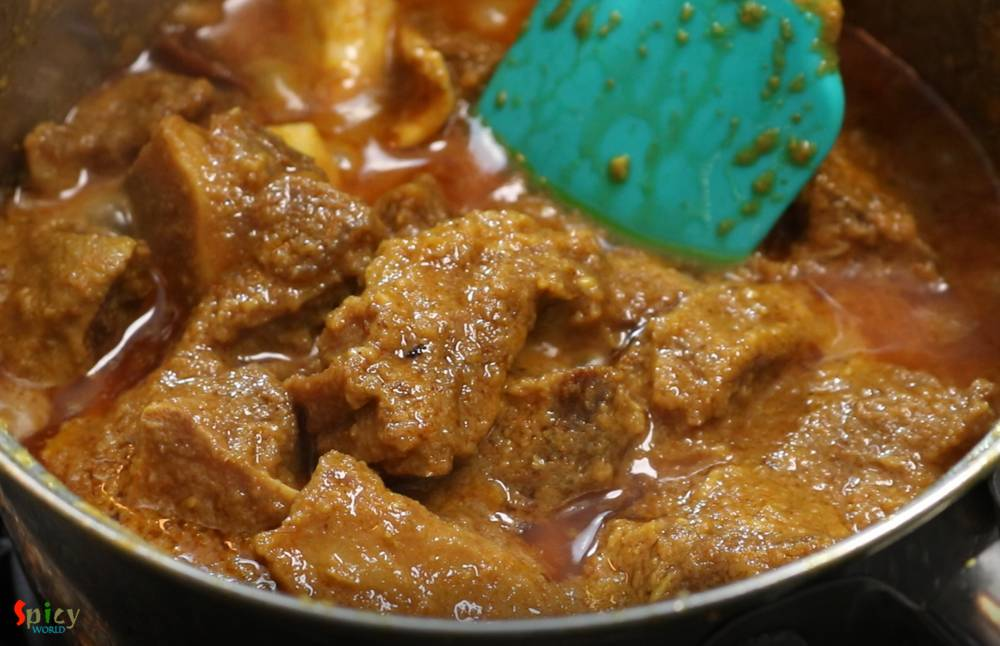
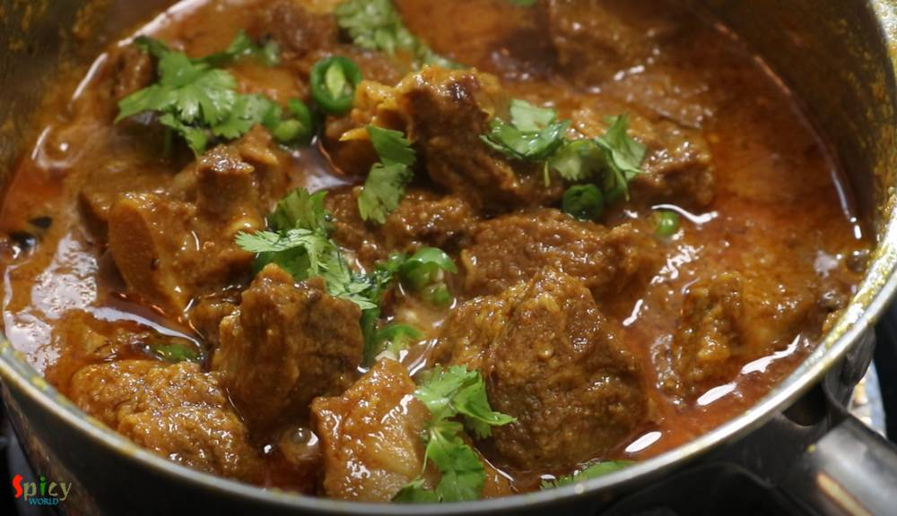

Simple and Easy Recipes
Mutton Handi
© 2016 Spicy World, Published on: Dec 19, 2018
Mutton Handi is a delicious goat meat curry which has a scrumptious gravy and goes best with plain chapati, butter naan or pulao. Handi means clay pot. Usually mutton handi is cooked in clay pots, that's where the name came from. But I didn't have one, so cooked in my regular vessel. The taste was out of the world, soft pieces of slow cooked mutton literally stole my heart. If you are a mutton lover, please give this recipe a try and you can thank me later.

Ingredients
- 700 grams of mutton, curry cut pieces.
- 1 big onion, roughly chopped.
- 3 Tablespoons of ginger garlic paste.
- 1 big tomato, roughly chopped.
- 7-8 almonds or cashews, soaked in water.
- 3 Tablespoons of yogurt.
- Salt and sugar as per your taste.
- 1 Teaspoon of turmeric powder.
- 2 Tablespoons of red chili powder.
- 2 Tablespoons of roasted coriander powder.
- 1 Tablespoon of roasted cumin powder.
- 2 cups of hot water.
- Whole spices (2 dry red chilies, 3 green cardamom, 3 cloves, 4 black peppercorns, 1 small cinnamon stick).
- 1/4th cup of mustard oil.
- 2 green chilies, chopped.
- 3 Tablespoons of chopped coriander leaves.


Steps
Marinate the mutton with yogurt, 1 Tablespoon of ginger garlic paste, turmeric powder and some salt. Keep it aside for 2-3 hours.
Make a smooth paste out of onion, tomato, little water and almonds (soak them in water for 15 minutes, peel the skin and use).
Heat mustard oil in a pan or handi.
Add all of the whole spices, saute for few seconds.
Add the remaining ginger garlic paste, cook for 2 minutes on low flame.

Now add the onion tomato paste, cook for 15 minutes on medium flame.
Add the marinated mutton, cook for 15 minutes on medium flame.
Add red chili powder, roasted cumin and coriander powder, some more salt and a pinch of sugar. Mix well and cook for 10 minutes.
After that add hot water and cook until the mutton becomes soft.
You can cook the meat in pressure cooker if you are in hurry. After cooking the mutton properly, it will look like this.
Lastly add chopped green chilies and chopped coriander leaves. Mix well and turn off the heat.
Your Mutton Handi is ready to serve.
Serve this hot with steamed rice or plain chapati.
")